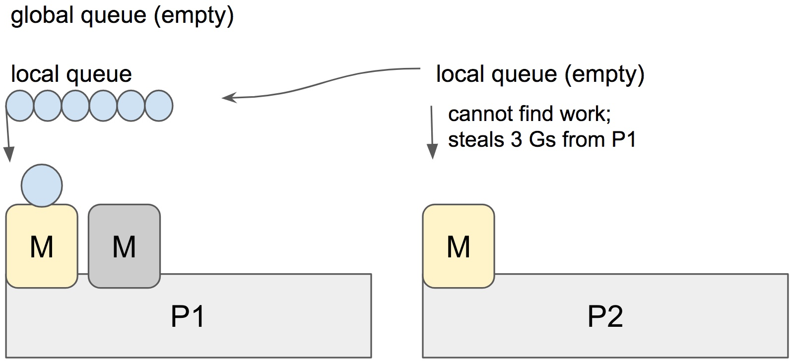

原文 Go’s work-stealing scheduler
Go 调度器的工作是将可运行的 goroutine 分配到多个系统线程上运行，这些线程由一个或多个处理器执行。在多线程计算中，有两种典型例子：工作共享（work sharing）和工作窃取（work stealing）。
- 工作共享：当处理器生成新的线程时，它将尝试将其中一些迁移到其他处理器，为了将处理器充分利用。
- 工作窃取：未充分利用的处理器会主动寻找其他处理器的线程并“窃取”某些线程。
线程迁移在工作窃取中发生频率比在工作共享中发生的频率低。当所有处理器都能运行时，不会迁移任何线程。只要有空闲处理器，就考虑迁移。
Go 自从 1.1 版本开始拥有工作窃取调度器（work-stealing schedule），由 Dmitry Vyukov 贡献。这篇文章将深入理解工作窃取调度器以及 Go 如何实现它。
调度基础
Go 有一个 M:N 调度器，它也可以利用多个处理器。任何时候，都需要在最多 GOMAXPROCES 个处理器的 N 个操作系统线程上调度 M 个 goroutine 。Go 调度器对 goroutine、线程和处理器使用以下术语：
- G: goroutine
- M: 系统线程
- P: 处理器
有一个特定于 P 的本地和全局的 goroutine 队列。每个 M 应该被分配一个 P 。如果 P 被阻塞或者在系统调用中，它们可能没有 M 。任何时候，每个 P 只能运行一个 M 。如果需要，调度程序可以创建更多的 M 。

每一轮调度都只是找到一个可运行的 goroutine 并执行它。，每一轮调度中，搜索均按照以下顺序进行：
1 | runtime.schedule() { |
一旦找到一个可运行的 G ，就运行它直到被阻塞。
注意: 看起来全局队列比本地队列更优先，如果 M 仅从本地队列进行调度，这样会出现本地队列没有 goroutine 的情况，所以每隔一段时间检查一次全局队列对于避免这种情况至关重要。
偷窃
当新的 G 被创建或者现有的 G 变成可运行状态时，将其推入当前 P 的可运行 goroutine 列表中。当 P 将 G 执行完毕后，它将尝试从自己的可运行 goroutine 列表中弹出 G 。如果现在列表空了， P 随机选择另外一个处理器（P）然后从它队列里偷一半可运行的 goroutine 。

上面的例子中， P2 无法找到可运行的 goroutine 。因此，它随机挑选了另一个处理器（P1）然后偷取了 3 个 goroutine 到自己的本地队列里。 P2 将要运行这些 goroutine ，并且多处理器之间的调度工作会更加公平。
自旋线程（Spinning threads）
调度程序始终希望向 M 分发尽可能多的可运行 goroutine ，以充分利用处理器，但与此同时，我们需要进行大量工作以节省 CPU 和电源。与此相反，调度器还应该为高吞吐量和 CPU 密集型程序而扩展。
如果性能至关重要，则持续抢占既耗费资源又会成为高吞吐量程序的问题。操作系统线程不应该经常切换可运行的 goroutine ，因为这会导致延迟增加。除了存在系统调用外，还需要不断阻塞和解除阻塞操作系统线程，这又增加许多性能开销。
为了最大程度地减少传递（hand-off）， Go 调度器实现了“自旋线程”，自旋线程会消耗一点额外的 CPU 运算，但是可以最大程度地减少操作系统线程的抢占。发生以下情况时线程自旋：
- 分配了 P 的 M 正在寻找可运行的 goroutine 。
- 没有分配 P 的 M 正在寻找可用的 P 。
- 如果有一个空闲的 P 并且没有其他自旋线程，则调度器还会在准备 goroutine 时释放附加的线程并旋转它。
任何时候最多有 GOMAXPROCS 个旋转的 M 。当一个自旋线程找到工作时，它将退出旋转状态。
如果存在未分配 P 的空闲的 M ， 则分配了 P 的空闲线程不会阻塞。当创建了新的 goroutine 或者一个 M 被阻塞时，调度器确保至少有一个旋转的 M 。这样可以确保没有可运行的 goroutine 能够在其他情况下运行；也就避免了过多的 M 阻塞/解除阻塞。
结论
Go 调度器通过偷窃将 goroutine 调度到正确且未充分利用的处理器上，从而避免了过多的操作系统线程抢占；以及实现了“自旋”线程，以避免高频发生阻塞和非阻塞的切换。
调度事件可以由执行跟踪器（execution tracer）跟踪。如果你碰巧认为自己的处理器利用率低，则可以调查发生了什么。